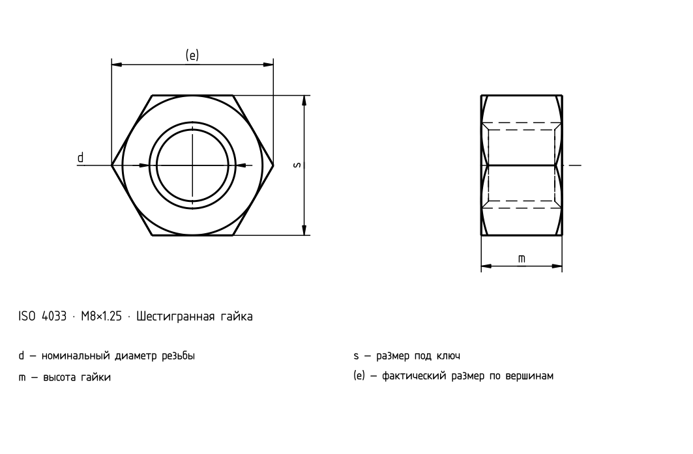

Шестигранные гайки, тип 2 — классы A и B
Исторический источник; числовые значения и исключения не полностью сверены с действующим стандартом.

Шестигранные гайки, тип 2 — классы A и B
| d | Шаг P | c _max. | d _a max. | d _a min. | d _w min. | e _min. | m _max. | m _min. | m' _min. | s _max. | s _min. |
|---|---|---|---|---|---|---|---|---|---|---|---|
| M5 | 0,8 | 0,5 | 5,75 | 5,0 | 6,9 | 8,79 | 5,1 | 4,8 | 3,84 | 8 | 7,78 |
| M6 | 1 | 0,5 | 6,75 | 6,0 | 8,9 | 11,05 | 5,7 | 5,4 | 4,32 | 10 | 9,78 |
| M8 | 1,25 | 0,6 | 8,75 | 8,0 | 11,6 | 14,38 | 7,5 | 7,14 | 5,71 | 13 | 12,73 |
| M10 | 1,5 | 0,6 | 10,8 | 10,0 | 14,6 | 17,77 | 9,3 | 8,94 | 7,15 | 16 | 15,73 |
| M12 | 1,75 | 0,6 | 13,0 | 12,0 | 16,6 | 20,03 | 12 | 11,57 | 9,26 | 18 | 17,73 |
| (M14) | 2 | 0,6 | 15,1 | 14,0 | 19,6 | 23,35 | 14,1 | 13,4 | 10,7 | 21 | 20,67 |
| M16 | 2 | 0,8 | 17,3 | 16,0 | 22,5 | 26,75 | 16,4 | 15,7 | 12,6 | 24 | 23,67 |
| M20 | 2,5 | 0,8 | 21,6 | 20,0 | 27,7 | 32,95 | 20,3 | 19 | 15,2 | 30 | 29,16 |
| M24 | 3 | 0,8 | 25,9 | 24,0 | 33,2 | 39,55 | 23,9 | 22,6 | 18,1 | 36 | 35 |
| M30 | 3,5 | 0,8 | 32,4 | 30,0 | 42,8 | 50,85 | 28,6 | 27,3 | 21,8 | 46 | 45 |
| M36 | 4 | 0,8 | 38,9 | 36 | 51,1 | 60,79 | 34,7 | 33,1 | 26,5 | 55 | 53,8 |
Шестигранные гайки, тип 2 — классы A и B · Нормативный контекст
| Пункт | Значение |
|---|---|
| Нормативный контекст | ISO 4033:2023 |
| Класс точности изделия | — |
| Класс прочности | Полный стандарт необходим для проверки размеров, допусков и всех условий. |
Шестигранные гайки, тип 2 — классы A и B
| d | Шаг P | c _max. | d _a max. | d _a min. | d _w min. | e _min. |
|---|---|---|---|---|---|---|
| M5 | 0,8 | 0,5 | 5,75 | 5,0 | 6,9 | 8,79 |
| M6 | 1 | 0,5 | 6,75 | 6,0 | 8,9 | 11,05 |
| M8 | 1,25 | 0,6 | 8,75 | 8,0 | 11,6 | 14,38 |
| M10 | 1,5 | 0,6 | 10,8 | 10,0 | 14,6 | 17,77 |
| M12 | 1,75 | 0,6 | 13,0 | 12,0 | 16,6 | 20,03 |
| (M14) | 2 | 0,6 | 15,1 | 14,0 | 19,6 | 23,35 |
| M16 | 2 | 0,8 | 17,3 | 16,0 | 22,5 | 26,75 |
| M20 | 2,5 | 0,8 | 21,6 | 20,0 | 27,7 | 32,95 |
| M24 | 3 | 0,8 | 25,9 | 24,0 | 33,2 | 39,55 |
| M30 | 3,5 | 0,8 | 32,4 | 30,0 | 42,8 | 50,85 |
| M36 | 4 | 0,8 | 38,9 | 36 | 51,1 | 60,79 |
Шестигранные гайки, тип 2 — классы A и B
| d | m _max. | m _min. | m' _min. | s _max. | s _min. |
|---|---|---|---|---|---|
| M5 | 5,1 | 4,8 | 3,84 | 8 | 7,78 |
| M6 | 5,7 | 5,4 | 4,32 | 10 | 9,78 |
| M8 | 7,5 | 7,14 | 5,71 | 13 | 12,73 |
| M10 | 9,3 | 8,94 | 7,15 | 16 | 15,73 |
| M12 | 12 | 11,57 | 9,26 | 18 | 17,73 |
| (M14) | 14,1 | 13,4 | 10,7 | 21 | 20,67 |
| M16 | 16,4 | 15,7 | 12,6 | 24 | 23,67 |
| M20 | 20,3 | 19 | 15,2 | 30 | 29,16 |
| M24 | 23,9 | 22,6 | 18,1 | 36 | 35 |
| M30 | 28,6 | 27,3 | 21,8 | 46 | 45 |
| M36 | 34,7 | 33,1 | 26,5 | 55 | 53,8 |
Шестигранные гайки, тип 2 — классы A и B · Нормативный контекст
| Пункт | Значение |
|---|---|
| Нормативный контекст | ISO 4033:2023 |
| Класс точности изделия | — |
| Класс прочности | Полный стандарт необходим для проверки размеров, допусков и всех условий. |